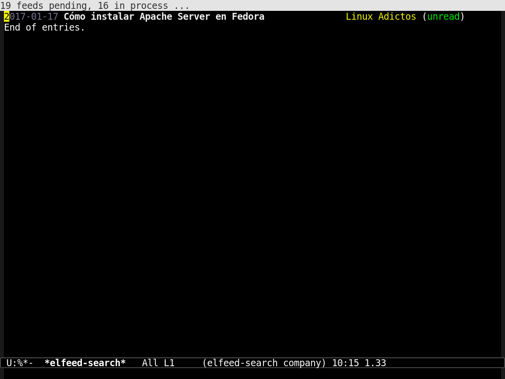
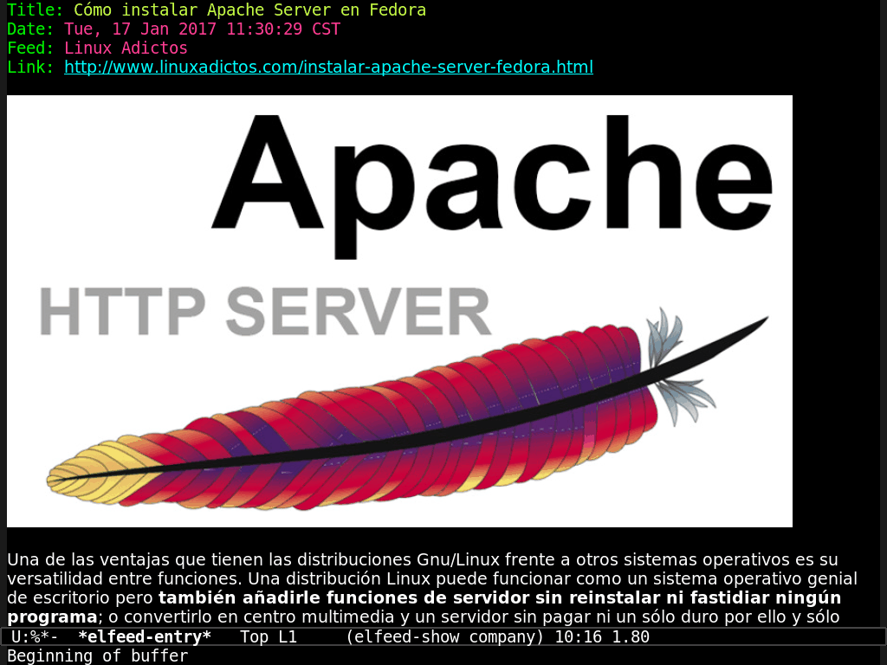
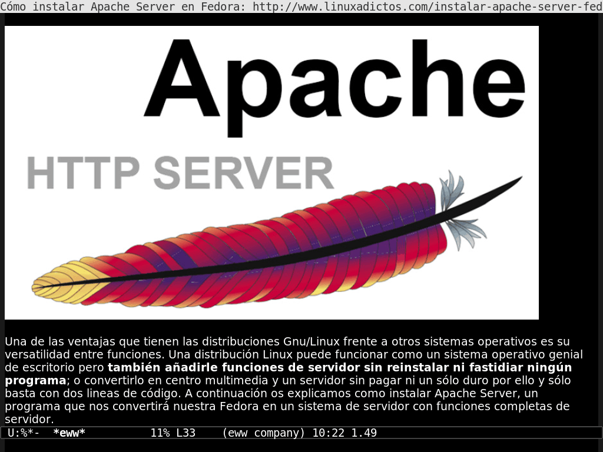

Emacs web y noticias en modo texto

Eso de los rss parece ser mas bueno que encontrar un billete de alta denominacion, almenos esa es la impresion que tenia, ya que (casi) todas las paginas incluyen el icono naranja con unas barras.
Cierto es que intente utilizarlo un par de veces, solo que lo encortre muy
complejo… asi pues he pasado cerca de cinco años abriendo todos los dias los
marcadores del firefox en manada, hasta que hace unos pocos dias descubri
como es esto de los rss (pese a que este blog los genera automagicamente)
bien, un rss, no es mas que un fichero de texto plano formateado en xml, es
decir, etiquetas que <abren> y etiquetas que </cierran>. Este fichero
almecena un resumen del contenido de un sitio o cosa, por ejemplo titulo de
entradas, fechas de publicacion, resumen de la entrada, autor, enlace y
demas… luego si tenemos un programa que sea capas de analizar dichos ficheros,
podemos enterarnos de los cambios realizados en el sitio de nuestro interes.. y
ya esta, no hay magia, javascript ni tecnologias web awesome y eso es bueno!
te estaras preguntando, ¿como puedo yo, resivir los beneficios de estos ficheros
de texto plano? Emacs!. que? gnus de nuevo, no, gracias que es muy raro,
intente con eso y fracase… espera, no abandones, hay otro modo desarrollado para
gente sencilla como tu y como yo, su nombre es elfeed
Instalar elfeed
Para instalar elfeed puedes utilizar el gestor de paquetes de emacs
(repositorio melpa), o seguir el siguiente metodo apto solo para romanticos de
manos inquietas.
desde la terminal vamos a la ruta donde tengamos nuestros complementos para emacs, en mi caso es
cd ~/.emacs.d/plugins/
luego descargamos el codigo
git clone https://github.com/skeeto/elfeed.git
ahora abrimos emacs, vamos a nuestro fichero de configuracion y agregamos esto
;;;;;;;;;;;;;;;;;;;;;;;;;;;;;;;;;;;
;; PACKAGE: elfeed ;;
;;;;;;;;;;;;;;;;;;;;;;;;;;;;;;;;;;;
;; source: https://github.com/skeeto/elfeed.git
(add-to-list 'load-path "~/.emacs.d/plugins/elfeed/")
(require 'elfeed)
;; aqui van los feeds que nos interesen
(setq elfeed-feeds
'(
"http://blog.chuidiang.com/feed/"
"http://blog.desdelinux.net/feed/"
"http://blogubuntu.com/feed"
"http://cucarachasracing.blogspot.com/feeds/posts/default?alt=rss"
"http://elarmarioinformatico.blogspot.com/feeds/posts/default"
"http://es.xkcd.com/rss/"
"http://feeds.feedburner.com/diegocg?format=xml"
"http://feeds.feedburner.com/Esbuntucom?format=xml"
"http://feeds.feedburner.com/GabuntuBlog"
"http://feeds.feedburner.com/ramonramon"
"http://feeds.feedburner.com/teknoplof/muQI?format=xml"
"http://feeds.feedburner.com/Ubunlog?format=xml"
"http://feeds.feedburner.com/UnBrutoConDebian?format=xml"
"http://fernand0.github.io/feed.xml"
"http://humanos.uci.cu/feed/"
"http://lamiradadelreplicante.com/feed/"
"http://linuxmanr4.com/feed/"
"http://misnotaslinux.blogspot.com/feeds/posts/default"
"http://nasciiboy.github.io/index.xml"
"http://planet.emacsen.org/atom.xml"
"http://quijotelibre.com/feed/"
"http://radioela.org/spip.php?page=backend"
"http://ranchoelectronico.org/feed/"
"http://red-orbita.com/?feed=rss2"
"http://rufianenlared.com/feed/"
"http://softwarelibre.deusto.es/feed/"
"http://totaki.com/poesiabinaria/feed/"
"http://www.blackhats.es/wordpress/?feed=rss2"
"http://www.kdeblog.com/feed/"
"http://www.lapipaplena.net/feed/"
"http://www.linuxadictos.com/feed"
"http://www.linuxhispano.net/feed/"
"http://www.maxxcan.com/feed/"
"http://www.muylinux.com/feed/"
"http://www.portallinux.es/feed"
"http://www.tomatesasesinos.com/feed/"
"http://www.tomatuordenador.net/feed/"
"http://www.ubuntizando.com/feed/"
"https://asm86.wordpress.com/feed/"
"https://autodefensainformatica.radioalmaina.org/feed/"
"https://birrasybits.wordpress.com/feed/"
"https://blog.adrianistan.eu/feed/"
"https://cartaslinux.wordpress.com/feed/"
"https://colaboratorio.net/feed/"
"https://comunicatelibremente.wordpress.com/feed/"
"https://daemons.cf/rss.xml"
"https://diariodeunalinuxera.com/feed/"
"https://elbinario.net/feed/"
"https://eliasbrasa.wordpress.com/feed/"
"https://elpinguinotolkiano.wordpress.com/feed/"
"https://elzorrolibre.noblogs.org/feed/"
"https://enekoamieva.com/blog/feed/"
"https://gutl.jovenclub.cu/feed/"
"https://h4ckseed.wordpress.com/feed/"
"https://jummp.wordpress.com/feed/"
"https://jvare.com/feed/"
"https://kernelpanicblog.wordpress.com/feed/"
"https://lasindias.blog/feed"
"https://leninmhs.wordpress.com/feed/"
"https://lignux.com/feed/"
"https://linuxgnublog.org/es/feed"
"https://mierda.tv/feed/"
"https://miguelpinia.wordpress.com/feed/"
"https://ondahostil.wordpress.com/feed/"
"https://otroespacioblog.wordpress.com/feed/"
"https://pfctelepathy.wordpress.com/feed/"
"https://picodotdev.github.io/blog-bitix/index.xml"
"https://radioslibres.net/rss/"
"https://victorhckinthefreeworld.com/feed/"
"https://vidaembebida.wordpress.com/feed/"
"https://www.atareao.es/blog/feed/"
"https://www.linuxito.com/?format=feed&type=rss"
"https://www.ochobitshacenunbyte.com/feed/"
"https://xkcd.com/rss.xml"
))
evaluamos el codigo, y ya tenemos nuestro leector rss. Para modificar o añadir
nuevos feeds modifica las cadenas de la variable elfeed-feeds
para hacer mas comodo el asunto, agreguemos un par de accesos directos a nuestro leector
(global-set-key [f7] 'elfeed)
(global-set-key [f8] 'elfeed-update)
al presionar F7 se abre el lector, con F8 actualizamos los feeds

para ver la entrada, colocamos el cursor sobre esta y damos un enter

si presionamos b o nos posicionamos en el enlace + un enter, la entrada se
abrira en el navegador del sistema! Tambien podemos copiar la ruta de enlace
pulsando y
para regresar a las entradas presionamos q y para marcar una entrada como
leeida r
elfeed + eww
ver la entrada en el navegador esta muy bien, pero no me gustan el javascript,
los anuncios ni las cosas modernas, que puedo hacer? Emacs incorpora un
navegador de texto plano eww, podemos abrir los enlaces desde el visor de
entradas de elfeed:
primero colocamos el cursor en el enlace y presionamos
M-x eww,veras que aparece el enlace como el parametro por defecto, damos enter o colocamos una direccion distinta + un enter

para salir de eww y regresar a elfeed pulsamos q
hagamos mas sencilla la operacion agregando algunos atajos para eww en nuestra
configuracion
(global-set-key [f5] 'eww)
(global-set-key (kbd "C-x w o") 'eww)
(global-set-key (kbd "C-x w b") 'eww-add-bookmark)
(global-set-key (kbd "C-x w l") 'eww-list-bookmarks)
(global-set-key (kbd "C-x w f") 'eww-open-file)
ahora para abrir los enlaces, colocamos el cursor en el enlace y pulsamos F5 o
C-x w o
Listo, vive la web en texto plano, el tiempo extra lo puedes utilizar para ver
porno, escribir un blog o lo que sea… ¯\_(ツ)_/¯